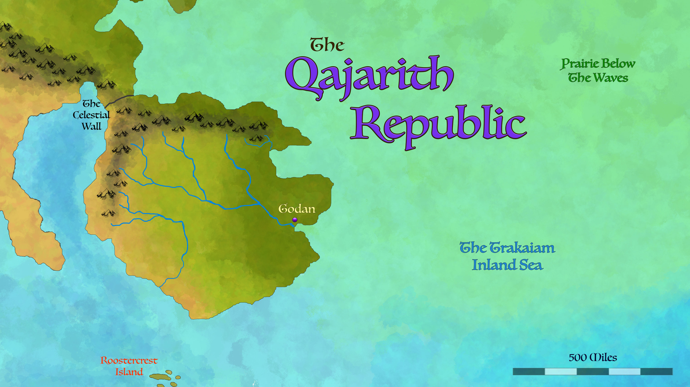
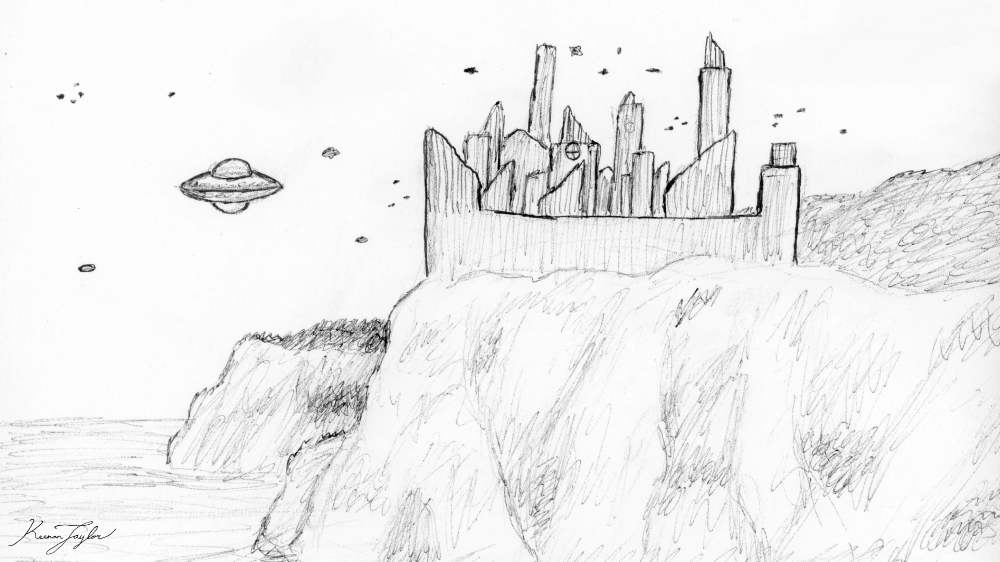
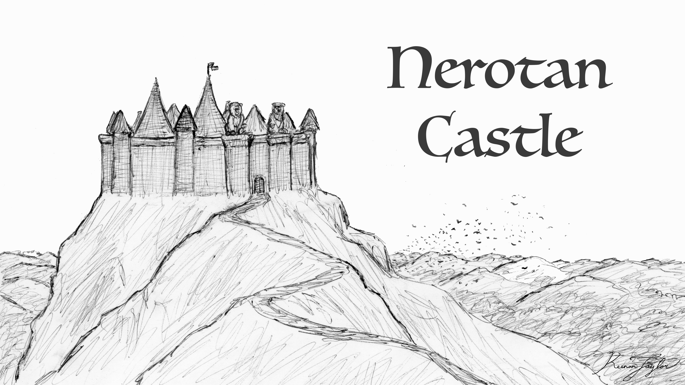
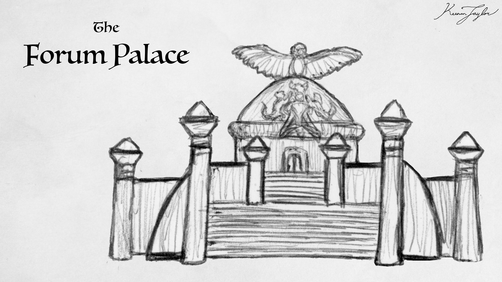
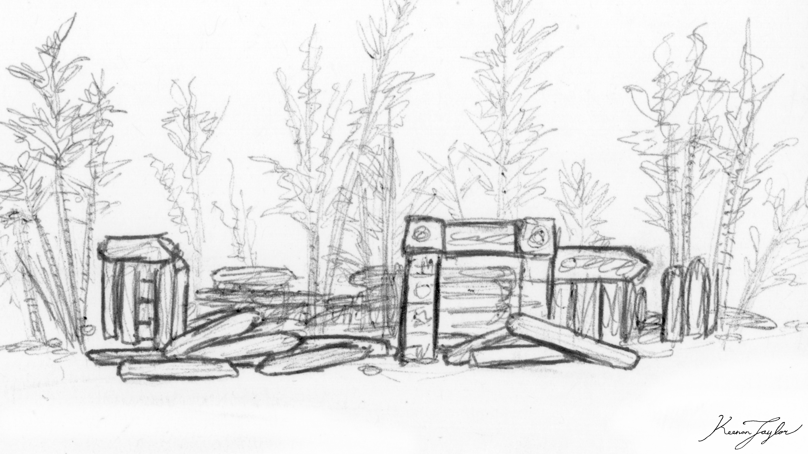
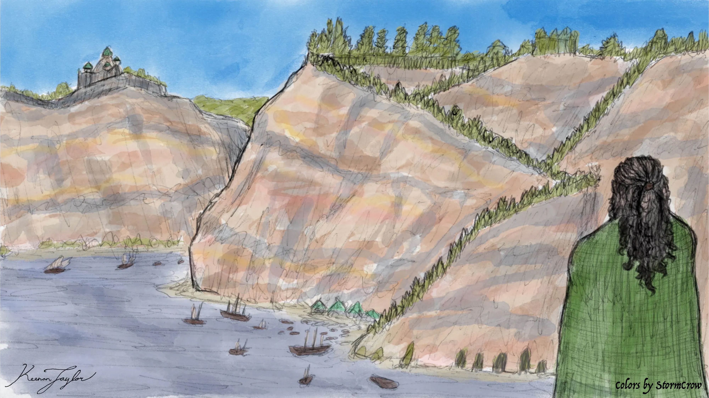
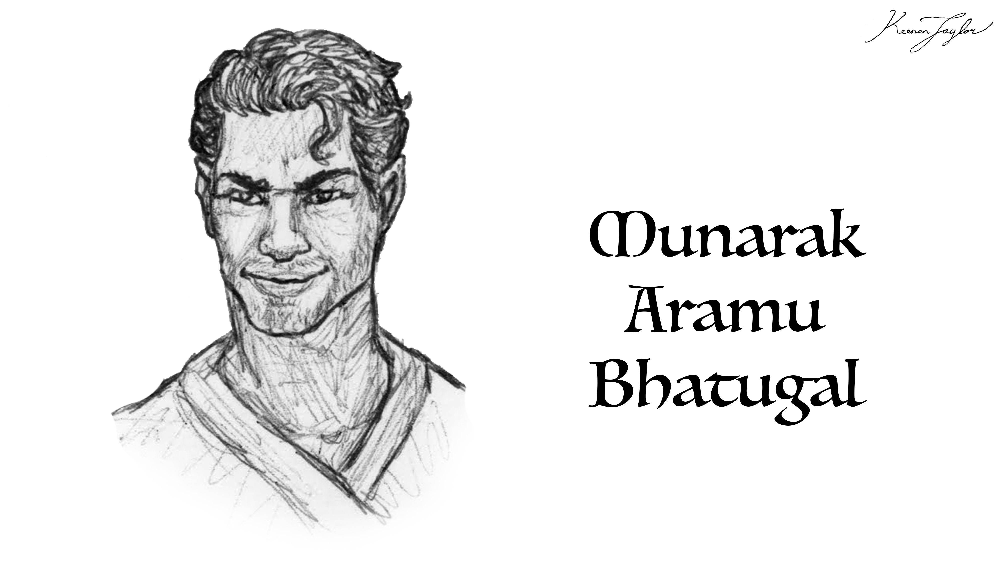
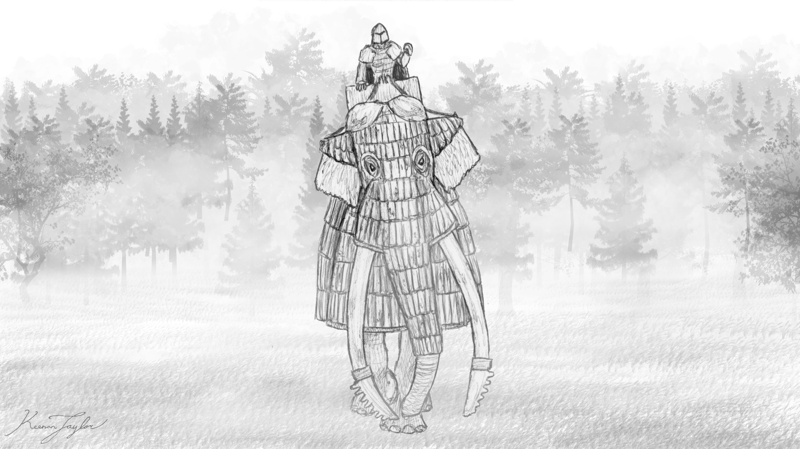

01 · INTRODUCTION
Overview

Godan is the capital of the Qajarith Republic and one of the most historically significant cities in the Known World. Situated in the eastern part of the Qajarith Peninsula, the city occupies the confluence of two major rivers originating in the lands historically associated with the Nerotans and Clan Roq. These waterways meet amid some of the most productive farmland in southern Arvel, providing the foundations for a settlement that has endured through thousands of years of dynastic conflict, religious transformation, political consolidation, and commercial expansion.
Few cities better illustrate the layered history of Kaimeran civilization. Godan has been inhabited since the era of the First Children, the ancient settlers who dramatically altered the ecology of the Qajarith Peninsula. Its agricultural surroundings, defensible approaches from the sea, and position along major waterways made it an attractive location for successive rulers. It subsequently passed through the hands of multiple dynasties, including rulers associated with demons, witches, and later Kaimeran political traditions. Each period left its mark on the city, producing an urban landscape in which buildings, sacred sites, and public institutions frequently contain evidence of much older structures.
Godan's historical importance does not arise from uninterrupted political supremacy. Unlike Osatra, the ancient capital of the Free-States of Qadan, Godan has been conquered and sacked on numerous occasions. Its fortunes have repeatedly risen and fallen with those of the powers governing the peninsula. Nevertheless, the city's importance as a settlement survived these changes. Even when its rulers changed, its rivers, farmland, harbor, and established urban infrastructure continued to attract new populations.
The city's modern political position emerged during the conquest of the Qajarith Peninsula by Munarak Bhatugal. Rather than attacking Godan first, as many previous conquerors had done, Munarak concentrated on surrounding territories and strategic strongholds. By the time his forces reached the city, Godan had been isolated from its remaining allies and supply routes. Its inhabitants surrendered without a major battle, and Munarak selected it as the capital of his new republic. The neighboring Nerotan territories subsequently joined the new political order voluntarily, helping establish the geographical and political foundations of modern Qajar.
Today, Godan is the seat of a powerful aristocratic republic whose influence rests on agriculture, military organization, manufacturing, and commerce. Its identity is more eclectic than that of Osatra, whose architecture deliberately emphasizes continuity and visual uniformity. Godan instead displays the physical consequences of its turbulent history. Its streets bring together stone and brick structures, wooden buildings, plastered facades, cultivated bamboo architecture, ancient sacred monuments, and monumental governmental complexes. The city is not a preserved relic of a single historical age, but a living record of many different societies occupying the same place.
02 · THE QAJAR Peninsula
Geographical Setting
The Qajarith Peninsula
Godan lies on the Qajarith Peninsula, a roughly circular landmass approximately five hundred miles across at the southern extremity of Arvel. Although connected to the continent, the peninsula possesses a distinctive ecological and climatic character. Mountain ranges surround much of its northern and western margins, while steep cliffs dominate many stretches of coastline. These physical barriers help separate the peninsula from the dangerous megafauna that defines much of mainland Arvel.
This relative isolation has been reinforced by the Celestial Wall, a magical barrier constructed after the First Children had eliminated much of the peninsula's native megafauna. The wall further restricted terrestrial movement between Qajar and the mainland, contributing to the development of a densely settled and intensively managed landscape. Although Qajar remains part of Arvel geographically, its ecological history increasingly resembles that of an enclosed region.
Qajar's landscape is a mosaic of extensive grasslands, humid forests, open woodland, river valleys, and heavily cultivated farmland. The northeastern sector is wetter and more densely forested, while the southwest becomes progressively drier under the influence of mountain rain shadows. The peninsula's relatively compact size allows these contrasting environments to exist within a short distance of one another.
The long history of settlement has further altered the landscape. Agricultural practices introduced by the First Children enriched the soils over millennia, leaving a legacy that continues to support modern farming. Fields, orchards, pasture, managed woodland, and settlements occupy much of the peninsula's most accessible terrain. Qajar is therefore not simply a naturally fertile region; it is an inhabited landscape whose productivity reflects generations of cultivation and environmental management.
Rivers and Agricultural Land
Godan's immediate surroundings are particularly favorable for settlement because two major rivers converge in the region. Their waters originate in separate territories associated historically with the Nerotans and Clan Roq, bringing the city into close geographical and economic contact with two of the peninsula's important political regions.
The rivers and their adjoining agricultural lands were not entirely the product of natural processes in their present form. The First Children deliberately cultivated the surrounding terrain, making river valleys relatively level, accessible, and suitable for settlement. Although erosion, sedimentation, and the passage of time have softened these interventions, the waterways remain comparatively predictable and traversable. The region's rivers consequently function as more than sources of water: they form lasting corridors for transportation, settlement, and exchange.
The confluence creates an unusually favorable location for a major city. Water is available for domestic use and agriculture, river routes connect the surrounding countryside, and fertile alluvial land supports extensive cultivation. The same conditions also encourage the movement of grain, livestock, timber, manufactured commodities, and other goods toward Godan's markets.
The city's prosperity is inseparable from this productive hinterland. Unlike a settlement dependent primarily on imported food, Godan occupies the center of an agricultural region capable of supporting a substantial population and supplying the surrounding towns and rural districts. Its position allows it to serve simultaneously as an administrative center, a market for local producers, and a point of connection between inland transportation and maritime commerce.
Coasts, Climate, and Natural Defenses
Much of the Qajarith Peninsula's coastline consists of granite cliffs and other steep coastal formations. These features make large-scale landings difficult and provide the peninsula with considerable protection against maritime threats. Godan is particularly defensible from the sea, benefiting from the broader coastal geography even though its own security has historically depended more heavily on events inland.
Qajar experiences a temperate maritime climate moderated by surrounding seas. Its northeastern regions receive substantial moisture carried inland from the Trakaiam Sea, while the mountains redistribute precipitation and create drier conditions farther southwest. Across the peninsula, mild winters, warm summers, and generally dependable seasonal rainfall have supported extensive agriculture.
The same environmental stability has contributed to Qajar's exceptional concentration of permanent settlements. Its soils support grain cultivation, orchards, vineyards, pasture, and communal gardens, while its rivers sustain productive freshwater ecosystems. The peninsula is not free from drought, flooding, predators, or warfare, but its geography permits more continuous occupation and more intensive land management than is possible in many regions elsewhere on Kaimere.
03 · PERVERSION OF THE Diminutive Humans
The First Children and the Ancient Settlement

Godan's origins extend back to the arrival of the First Children in the Known World. These humans established themselves in the Qajarith Peninsula and transformed it through a combination of hunting, agriculture, magical practices, and extensive environmental engineering. Their initial occupation included the systematic removal of dangerous native megafauna, allowing human settlements to expand into areas that had previously been difficult to inhabit safely.
The First Children also altered the land itself. They enriched the peninsula's soils through sustained agricultural management and maintained river systems and cultivated terrain around major settlements. These interventions were particularly consequential in the region that became Godan, where the natural meeting of two rivers already provided a strong foundation for a permanent community.
The site's long occupation reflects the combination of fertile land, reliable freshwater, established routes, and accessible building sites. The rivers offered transportation and agricultural resources, while the surrounding cliffs helped protect the wider region from attacks arriving by sea. The city could not be made equally secure against every direction of attack, but its natural advantages encouraged successive rulers to maintain and develop it rather than abandon it.
The First Children eventually perished, but their work remained. Their cultivated soils continued to support agriculture, while their settlements, fortifications, and sacred places provided foundations for later societies. Godan's landscape consequently preserves a distinction between the age of its original creation and the many later civilizations that inherited it. Its oldest structures are not merely ancient buildings; they are remnants of an earlier political and cultural order whose influence persisted long after that order disappeared.
In the millennia that followed, the peninsula experienced the rise and fall of dynasties associated with demons and witches, as well as later political authorities. Godan remained a desirable center because its agricultural and geographical advantages did not disappear when one ruling family replaced another. Yet continued occupation did not guarantee political stability. The city was repeatedly captured, damaged, and reconstructed, and each new regime altered the settlement according to its own religious, architectural, and governmental priorities.
04 · CREATION OF THE FAMILIES
Dynastic History and the Forum Palace
A City of Successive Rulers

Godan's history differs sharply from that of Osatra. Whereas Osatra remained unconquered and developed an architectural tradition intended to evoke permanence, Godan repeatedly changed hands. Successive dynasties occupied the city, modified its institutions, and constructed new buildings alongside the remains of earlier periods. Sacking and reconstruction became recurring features of its history.
These political changes created an eclectic urban landscape. Buildings associated with different rulers and religious traditions survive in close proximity, sometimes incorporating older foundations or building materials. Rather than preserving one consistent aesthetic, Godan reflects the accumulation of competing ideas about authority, legitimacy, sacred history, and the appropriate appearance of government.
The city's most prominent governmental complex, the Forum Palace, is itself associated with this long succession of regimes. It is said to have been first constructed by the Demon King Lasherodlov approximately ten thousand years ago. The precise history of its earliest structure is bound up with tradition and the overlapping accounts of later rulers, but the complex is understood to have served as a governmental center under numerous authorities.
The Forum Palace

The Forum Palace now houses the Senate of the Qajarith Republic and remains the primary symbol of national government. Its long institutional history gives it a significance beyond its present political function. Rulers who occupied Godan in earlier ages also used the complex as a seat of authority, making it a physical link between the city's dynastic past and its republican present.
The palace's appearance is correspondingly diverse. Its surrounding structures exhibit a wide-ranging mixture of architectural styles, reflecting different phases of construction, occupation, religious reform, and political restoration. The complex is neither the product of a single architect nor the expression of one coherent period. Instead, it is a built record of repeated efforts to claim, reshape, and legitimize power in the same place.
The palace has also acquired a reputation for supernatural associations. During the Age of Witches, the land was cleansed and hallowed; during the Dark Ages, Qajarith priests purified it as their people reasserted a claim to the ancestral territory. Despite these rites, some traditions maintain that Lasherodlov and his court continue to haunt the complex. These accounts belong to the city's religious and historical folklore, and their truth remains disputed.
Regardless of such stories, the Forum Palace's continuing use as the Senate's meeting place gives ancient architecture a direct role in modern political life. The republican government does not meet in a newly constructed symbol of political renewal. It conducts its affairs within a complex associated with the rulers and religious movements that preceded the Republic by many thousands of years.
The First Temple

Near the heart of Godan stands a simple henge-like monument known as the First Temple. Qajarith tradition identifies it as a surviving sacred place associated with Kaimerans who resisted the First Children's cull and conquest of the peninsula. According to these accounts, the structure was too powerful for the First Children or the later demons to eradicate. Its survival is consequently presented by some Qajarith as evidence of their ancestral ownership of the land.
The First Temple's importance is therefore both religious and political. It serves as a monument to a past that predates the dominant traditions of the First Children, and it provides a sacred point of reference for later Qajarith claims to the peninsula. The monument's modest appearance contrasts with the monumental Forum Palace, but its symbolic significance is considerable.
Stones resembling those used in the First Temple have been identified within the foundations of the Forum Palace. This resemblance has encouraged the interpretation that the palace was built over, or incorporated materials from, an older structure similar to the surviving temple. The full extent of this earlier complex is uncertain, but the possibility reinforces the impression that Godan's governmental center occupies ground that was already sacred or politically important long before the current Republic existed.
Together, the Forum Palace and First Temple embody two different forms of historical legitimacy. The palace represents successive rulers and the institutions that occupied the city, while the temple represents a claimed continuity with an older people and their sacred inheritance. Their presence within the same city illustrates how Godan's history is shaped not only by conquest, but by continuing arguments over who possesses the right to govern the land.
05 · EVERCHANGING CHARACTER
Architecture and Urban Character

Godan's architecture is defined by historical variety. Repeated conquest and rebuilding produced a city where different materials, construction methods, and visual traditions coexist. Stone and brick buildings stand alongside structures made from wood and plaster, while carefully cultivated bamboo remains a distinctive component of the urban environment.
The continued appearance of bamboo is particularly notable. It grows persistently wherever gaps and patches of free soil allow it to establish itself. Some stands may represent remnants of the bamboo construction methods used by the First Children. Although generations of growth and regrowth make the age of individual plants difficult to establish, the plant's persistence gives parts of the city a visible connection to its ancient past.
Bamboo has also been cultivated in forms suitable for construction, allowing it to serve as a living foundation or structural element for certain houses and municipal buildings. This practice distinguishes Godan from cities whose architecture relies almost entirely on quarried stone, fired brick, timber, or other conventional building materials. In some places, the built environment and living vegetation are not sharply separated.
The city's diverse architecture reflects more than aesthetic preference. Each new dynasty inherited structures built by its predecessors, along with the practical constraints of existing streets, foundations, and public spaces. Some rulers preserved older buildings; others altered or replaced them. Religious authorities consecrated certain sites, while governmental institutions continued to occupy others. The result is an urban environment in which the boundaries between archaeological remains, sacred monuments, and functioning civic buildings can be difficult to distinguish.
The confluence of the rivers and the presence of a large harbor have contributed to the city's prosperity, bringing an ongoing flow of people and goods into its markets. Commercial activity introduces new materials and styles alongside those inherited from the city's past. Godan therefore remains an evolving city rather than a static collection of ruins. Its antiquity is visible precisely because new construction has repeatedly accumulated around older structures.
In this respect, Godan contrasts with Osatra. Osatran architecture deliberately employs geometric regularity and stylistic consistency to project permanence and stability. Godan communicates a different kind of continuity: its history is displayed through the survival and modification of buildings from many distinct periods. Its architectural identity is not timelessness, but adaptation.
06 · Munark's Campaign
The Conquest of Munarak Bhatugal

The political order that eventually produced the modern Qajarith Republic emerged from Munarak Bhatugal's conquest of the peninsula. Before this consolidation, Qajar was divided among independent lordships, counties, and local powers. Some territories possessed substantial military and political influence, particularly the Nerotans in the west and Clan Roq in the north, but much of the peninsula remained decentralized.
Godan was one of the region's most important settlements long before Munarak's arrival. Its position at the meeting of two major rivers, its agricultural surroundings, and its established political connections made it a stronghold for a prominent family. This family had welcomed numerous allies within the city's walls, and the concentration of people and resources made Godan a potentially formidable opponent.
Earlier conquerors generally attacked Godan first. Although the city was not considered impossible to capture, an early assault gave its neighbors time to prepare. While an invader concentrated on the city, surrounding powers could strengthen fortifications, organize their forces, and coordinate resistance. In this way, Godan's position at the center of a network of allied settlements could frustrate campaigns before they had advanced far into the peninsula.

Munarak adopted a different strategy. Rather than beginning with the city, he concentrated his campaign on the surrounding territories. He conquered Clan Roq and the northern regions, then secured the farmland and approaches surrounding Godan. By controlling the countryside, he deprived the city of much of its strategic depth and undermined the network of allies upon which its defenders relied.
A blockade of Godan's western river and harbor further isolated the city. Its defensibility against attack from the sea could not compensate for the loss of movement and supply through the surrounding territory. By the time Munarak's armies reached Godan, the city's strategic position had deteriorated so substantially that its defenders surrendered without contest.
Munarak's campaign demonstrated the importance of controlling a region's agricultural and transportation networks rather than simply capturing its largest fortified settlements. By conquering the territory around Godan before attacking the city itself, he avoided giving the remaining powers the warning provided by earlier campaigns. The strategy also allowed him to inherit a functioning urban center rather than risk destroying it through a prolonged siege.
Munarak subsequently made Godan the capital of his new republic. The Nerotans, whose lands he had failed to capture outright, voluntarily joined the new political order not long afterward. Godan's selection as capital gave the republic an established administrative center positioned between important agricultural and political regions. The city that had once served as a stronghold for a major family became the center of a government seeking to unite the peninsula.
07 · Consolidation of the republic
Godan and the Formation of the Republic
The modern Qajarith Republic is the product of political consolidation layered over a much older landscape of local allegiances. For thousands of years, the peninsula had been divided among independent territories whose rulers formed alliances, engaged in conflict, and sometimes united under powerful dynasties. Munarak's conquest created a new political framework, but it did not erase the identities or interests of the regions that entered it.
Godan became the location where these competing traditions were brought into a common system of government. Its history as a stronghold gave it political prestige, while its geographical position made it well suited to communicate with the different parts of Qajar. The city's established population, markets, river routes, and agricultural hinterland provided the practical foundations required by a permanent capital.
The Republic is not an absolute monarchy, nor is it a government in which all political authority is exercised directly by the population. It functions as an aristocratic republic, distributing power among noble houses, military figures, wealthy merchants, influential guilds, and representatives of major settlements. Local institutions retain substantial responsibilities, while republican bodies oversee matters affecting the peninsula as a whole.
The Senate is the highest national governing institution. It establishes policy, directs diplomacy, oversees military campaigns, regulates trade, and coordinates infrastructure that crosses regional boundaries. The Forum Palace in Godan is its governmental center, placing the highest institutions of the modern state within one of the city's oldest and most historically contested complexes.
Republican politics are shaped by a balance among major regional interests. Nerot is associated with the fertile western grasslands, its agricultural production, and its traditions of military nobility. Godan's wider region possesses a strong commercial orientation, with merchants, craftspeople, administrators, and guilds advocating predictable laws and efficient internal trade. M'rok, in the northern forests and hill country, has generally favored the expansion of commerce, infrastructure, and centralized institutions.
These political blocs do not act as a single unified faction. Legislation emerges through negotiation among noble families, regional authorities, guild representatives, merchants, and military officials. The Senate's deliberations can be lengthy, in part because Kaimeran lives commonly extend across five or six centuries. Political participants may possess personal memories of events that other societies would know only through historical records.
Godan's position makes it a natural meeting point for these competing interests. Senators, diplomats, merchants, officers, and petitioners arrive from throughout the peninsula, bringing regional disputes and broader questions of republican policy into the capital. The city functions not simply as the seat of government but as the place where the Republic continually negotiates its identity.
08 · Consolidation of the republic
Commerce and the Urban Economy
Godan's economic importance rests on the convergence of productive farmland, navigable waterways, established markets, and national administration. Its position provides access to agricultural goods from the surrounding valleys as well as commodities moving through the peninsula's broader network of towns and roads. The city's harbor adds a maritime connection, allowing goods to move between inland markets and the wider Known World.
Qajar's economy is unusually diverse. Its agricultural wealth supports large quantities of grain, vegetables, fruit, dairy products, and livestock. Managed forests supply timber, fuel, and construction materials, while the northern mountains provide mineral resources including iron, copper, tin, silver, lead, limestone, and marble. These commodities support a substantial tradition of craft production and manufacturing.
The city benefits from this wider productive system. Agricultural goods arrive from the surrounding countryside, while craftsmen transform raw materials into tools, household wares, textiles, metal goods, and other finished products. Markets bring together producers, merchants, transporters, and customers from multiple regions. The city's political institutions also create demand for scribes, builders, legal specialists, officials, engineers, and suppliers serving the government.
Qajarith manufacturing is supported by a network of professional guilds. Blacksmiths, masons, carpenters, textile workers, millers, merchants, armorers, bowyers, and other skilled occupations maintain professional standards and apprenticeship traditions. Their organizations regulate aspects of production and help negotiate commercial arrangements with noble houses and governmental authorities.
Military production is particularly important to the Republic's wider economy. Qajarith workshops are known for metalworking, articulated armor, crossbows, and other equipment used by the Republic's armed forces and mercenary companies. The development of the winged crossbow during the Consolidation Era illustrates the Qajarith tendency to adopt foreign ideas and improve them through local engineering.
Trade also connects Godan to the other great powers of the Known World. Maritime commerce through the Free-States is particularly important to long-distance exchange. Qajarith exports include metalwork, weapons, textiles, preserved foods, leather goods, agricultural products, and construction materials. Imports bring luxury commodities, exotic spices, rare materials, books, and technologies from distant regions.
Unlike a city whose prosperity depends upon a single resource, Godan is supported by the combined output of the peninsula's farms, mines, forests, workshops, and trading networks. Its economy is therefore connected to both the land immediately surrounding it and the broader prosperity of the Republic. Commercial activity in the capital is simultaneously local, regional, and international.
09 · Family and the Tradition
Society and Daily Life
Godan's inhabitants participate in the wider cultural traditions of the Qajarith, whose society is distinguished by long lifespans, extensive family networks, strong local loyalties, and an unusually deep sense of historical continuity. Hereditary magic allows Kaimerans to live for several centuries, but it also greatly prolongs childhood. Pregnancy lasts approximately three years, puberty usually begins in the fourth or fifth decade of life, and adulthood is commonly recognized between seventy and one hundred years of age.
These biological conditions shape family and civic life throughout Qajar, including the capital. Households often encompass several living generations, and children receive instruction from parents, grandparents, more distant relatives, and professional tutors. Education can extend across decades, covering literacy, mathematics, history, philosophy, practical crafts, agriculture, rhetoric, and physical training before a young person enters a specialized profession.
Family remains a central source of identity. Individuals are expected to fulfill obligations to their household, community, profession, regional authorities, and the Republic. These loyalties are generally viewed as complementary, although political disputes can arise when the interests of a noble family conflict with those of the state.
The capital brings together people from different regions and social positions. Noble households, merchant families, guild members, scholars, soldiers, laborers, and government officials participate in its daily life. The city also receives travelers and commercial visitors moving between the interior of Qajar and the wider Known World. This concentration of people and occupations gives Godan a particularly diverse social character.
Qajarith society remains hierarchical despite the Republic's formal institutions. Great noble houses exercise considerable influence through landownership, military service, ancestry, and political connections. Beneath them is a broad population of free commoners, including farmers, craftspeople, merchants, builders, sailors, scholars, and soldiers. Guilds and professional associations give skilled workers a means of protecting their interests and preserving standards of training.
Honor, responsibility, and practical competence are widely valued. Reputation can endure for centuries, and a person's conduct is often understood as reflecting upon their household and professional community. This contributes to a culture that prizes reliability, patience, hospitality, and the careful fulfillment of obligations. Godan's role as a governmental center places these values in constant contact with politics, commerce, and public administration.
10 · The Stars
Religion, Sacred History, and Folklore
Religion in Godan reflects the accumulated spiritual history of the Qajarith Peninsula. The city's sacred landscape contains places associated with the First Children, later dynasties, the Age of Witches, and the religious traditions that developed during the Dark Ages. These sites do not necessarily belong to a single uninterrupted religious institution. Instead, they preserve the memory of successive peoples who claimed, reinterpreted, or attempted to purify the same ground.
The First Temple is especially important in traditions concerning the Qajarith claim to ancestral territory. Its survival is interpreted by some as evidence that a people resisted the First Children's conquest and maintained a sacred presence in the region. The monument therefore carries a meaning that extends beyond worship: it provides a physical connection to an older history and reinforces the idea that the present population inherits obligations and rights from those who came before.
The Forum Palace has a different but equally complex religious history. Traditions associate its earliest construction with the Demon King Lasherodlov. Later, during the Age of Witches, the land was cleansed and hallowed. Qajarith priests subsequently purified it during the Dark Ages as they asserted their claim to the peninsula. Some stories nevertheless maintain that Lasherodlov and his court remain present as hauntings within the ancient complex.
Such stories coexist with the practical role of the palace as the seat of the Senate. The building is both a functioning political institution and a repository of religious memory. Its continued use demonstrates how Qajarith society accommodates ancient structures within present-day life, even when their histories are disputed or their reputations remain unsettling.
More broadly, Qajarith spiritual traditions emphasize relationships among the living, the dead, the land, and the wider cosmos. The stars are associated with ancestors and the continuation of identity beyond death. Family heirlooms, remembered words, tools, and personal objects may hold emotional and spiritual significance because they preserve a connection to individuals who lived centuries earlier.
11 · Conservation
Wildlife and the Managed Landscape
Godan occupies one of the more extensively modified landscapes on Kaimere. The Qajarith Peninsula has been inhabited and cultivated for thousands of years, and its soils, waterways, vegetation, and animal communities have all been shaped by human activity. The removal of much of the original native megafauna, the construction of the Celestial Wall, and the subsequent introduction and establishment of other animals transformed the peninsula into a distinctive ecological region.
Compared with much of mainland Arvel, Qajar supports a more familiar assortment of medium-sized and large animals within its settled areas. Deer, rabbits, rodents, peccaries, drakes, cattle, horses, and other domestic or wild species are prominent in the agricultural landscape. Predators such as lions, leopards, wolves, and cockatrice still create risks for livestock and travelers, but these threats can generally be managed through organized hunting, guardian animals, fencing, and settlement patrols.
The rivers, lakes, and wetlands of Qajar also support distinctive freshwater communities. Pikes, snakeheads, giant catfish, alligator snapping turtles, and alligators occupy different parts of the peninsula's aquatic environments. These species contribute to local fisheries and food webs, although some can become serious pests or disrupt native fish populations.
The giant snakehead is a particularly notable example of the challenges created by the movement of organisms between ecosystems. Its ability to survive in poorly oxygenated waters and travel overland between bodies of water allows it to invade isolated lakes and streams, where it may sharply reduce fish stocks. Musketeer pike have consequently become valuable in some contexts for suppressing snakehead populations.
This ecological history is relevant to Godan because the city's prosperity depends upon the productive landscape around it. Agriculture, livestock husbandry, forestry, hunting, and freshwater resources support urban life, while human activity continuously changes the distribution and abundance of local species. The Qajarith capital stands within a landscape that is neither untouched wilderness nor entirely artificial, but the accumulated result of natural processes and millennia of management.
12 · THE LAND AS A DEFENSE
Military Importance and Strategic Vulnerability
Godan's military history is inseparable from its geography. The surrounding cliffs and the peninsula's coastal terrain provide substantial protection against attacks from the sea. The city's river systems also create valuable transportation routes and agricultural corridors. These advantages, however, do not make Godan equally secure from every direction.
The city has historically been difficult to defend against a coordinated land invasion. Its position among fertile territories and major transportation routes makes the surrounding countryside valuable to any army operating in the peninsula. An opponent who controls the approaches, fields, and waterways can threaten the city without immediately assaulting its central defenses.
Munarak Bhatugal's conquest became the clearest historical demonstration of this weakness. By seizing northern territories and the farmland surrounding Godan, then blockading the city's western river and harbor, he isolated the settlement before bringing his armies against it. The surrender that followed showed that even a historically important stronghold could be neutralized when its regional support system was lost.
In the modern Republic, Godan's role as the seat of government gives its security national significance. The city houses the Senate and important administrative institutions, making its continued operation essential to the political stability of Qajar. At the same time, its historical experience reinforces the importance of defending transport routes, surrounding settlements, and supply networks rather than relying solely upon walls or coastal geography.
The Republic maintains one of the largest and best-equipped military establishments in the Known World. Its forces operate alongside noble militias and privately organized mercenary companies, while the Senate retains ultimate authority over national military policy. The peninsula's military traditions, developed through centuries of conflict, remain an important part of Godan's political identity.
13 · THE LAND AS A DEFENSE
Godan in the Modern Era
Godan today stands at the intersection of antiquity and modern republican life. Its ancient monuments and dynastic architecture coexist with markets, workshops, administrative buildings, religious sites, and the institutions of a powerful state. The city has survived because its importance has never rested on a single ruler or political system. Its rivers remain productive, its surrounding farmland continues to support settlement, and its position within Qajar keeps it central to both internal commerce and national administration.
The Republic's economic strength is rooted in the wider peninsula, but Godan helps coordinate the institutions that turn this agricultural and industrial productivity into political influence. Merchants and guilds depend upon consistent laws, administrators manage public works and taxation, and senators negotiate the interests of regions whose histories long predate the Republic itself.
The city also embodies enduring tensions within Qajarith society. Traditional noble houses retain substantial influence, while merchants, guilds, and urban interests advocate reforms that improve trade and administration. The Republic's relationship with the Free-States of Qadan adds another dimension to these debates. Free-State merchants, engineers, financiers, and political advisers have contributed to Qajar's consolidation and prosperity, but some traditionalists believe their influence has become excessive.
These arguments are not merely abstract political questions. They concern the balance between regional independence and centralized administration, between inherited custom and practical reform, and between economic expansion and political sovereignty. As the capital, Godan is where many of these questions become matters of government.
The city remains prosperous because Qajar's agricultural production, commercial networks, and professional traditions provide a strong economic foundation. Yet prosperity does not remove the challenges of maintaining a republic whose member regions possess centuries of independent history. Godan's political institutions must continue negotiating those competing interests while preserving the stability that makes the Republic successful.